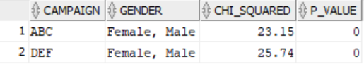

Chi-square Testing in Oracle SQL¶
I wanted to carry out a test to determine if there was statistically significant difference in customer churn for different genders across different campaigns. This is possible with the Pearson’s chi-square test of independence which allows us to test if there is a relationship between two categorical variables.
Faced with too many tools to choose from and not being sure which was the best to use, I decided to see if I could do it in Oracle SQL. A quick search revealed there was an in-built function but I also wanted to automatically test the assumptions that the expected value of every cell be greater than 5. The other assumptions of independence, simple random sampling and sampling size being tested manually. The test compares observed outcomes with expected outcomes for a r x c contingency table using the chi-square distribution.
The Pearson’s chi-square test of independence allows us to test the null hypothesis that there is no relationship between two categorical variables. So for each campaign, I tested the relationship between gender and churn.
Here, I create some dummy data set for three campaigns (ABC, DEF and XYZ) and three gender options (male, female and other). About 10% of customers have churned.
CREATE MATERIALIZED VIEW cust_db AS
/* Non churn cases for which churn_flag = 0 */
SELECT floor(dbms_random.VALUE(1,1E4)) AS cust_no
, 0 AS churn_flag
, decode( round(dbms_random.VALUE()) , 0, 'ABC', 'DEF') AS campaign
, CASE WHEN rand_var BETWEEN 0 AND 0.475 THEN 'Male'
WHEN rand_var BETWEEN 0.475 AND 0.95 THEN 'Female'
ELSE 'Other'
END AS gender
FROM (
SELECT ROWNUM ID
, dbms_random.VALUE() AS rand_var
FROM dual
CONNECT BY LEVEL <= 1E3
)
UNION
/* Churn cases, with more male than female churn cases */
SELECT floor(dbms_random.VALUE(1,1E4)) AS cust_no
, 1 AS churn_flag
, decode( round(dbms_random.VALUE()) , 0, 'ABC', 'DEF') AS campaign
, CASE WHEN rand_var BETWEEN 0 AND 0.8 THEN 'Male'
WHEN rand_var BETWEEN 0.8 AND 0.95 THEN 'Female'
ELSE 'Other'
END AS gender
FROM (
SELECT ROWNUM ID
, dbms_random.VALUE() AS rand_var
FROM dual
CONNECT BY LEVEL <= 100
)
UNION
/* A single customer having subscribed to the XYZ campaign */
SELECT 0 AS cust_no
, 0 AS churn_flag
, 'XYZ' AS campaign
, 'Female' AS gender
FROM dual
;
For each campaign, I calculate the expected counts of the 2 x 3 contingency table made by cross tabulating gender by churn and then check if each expected count is larger than 5. This allows me to check which categories to test using the chi-square test.
WITH test_cats AS (
SELECT DISTINCT campaign
, gender
FROM (
SELECT campaign
, gender
, COUNT(churn_flag) OVER (PARTITION BY campaign, gender )
* SUM(1 - churn_flag) OVER (PARTITION BY campaign)
/ COUNT(churn_flag) OVER (PARTITION BY campaign) AS expected_stay
, COUNT(churn_flag) OVER (PARTITION BY campaign, gender )
* SUM(churn_flag ) OVER (PARTITION BY campaign)
/ COUNT(churn_flag) OVER (PARTITION BY campaign) AS expected_churn
FROM cust_db
)
WHERE expected_stay > 5
AND expected_churn > 5
)
...
Next, I run the chi-square tests on the raw data selecting which lines to take using those identified in the previous step.
...
, chisq_results AS (
SELECT db.campaign
, round( STATS_CROSSTAB(db.gender, db.churn_flag, 'CHISQ_OBS'), 2 ) AS chi_squared
, round( STATS_CROSSTAB(db.gender, db.churn_flag, 'CHISQ_SIG'), 5 ) AS p_value
FROM cust_db db
RIGHT JOIN test_cats cat
ON db.campaign = cat.campaign
AND db.gender = cat.gender
GROUP BY db.campaign
)
...
Finally, the last step allows us to identify which gender categories have been included in the final test. This returns a table showing the chi-square test statistic and the associated p-value for two tests.
...
SELECT res.campaign
, LISTAGG(cat.gender, ', ') WITHIN GROUP (ORDER BY cat.gender) AS gender
, res.chi_squared
, res.p_value
FROM chisq_results res
LEFT JOIN test_cats cat
ON res.campaign = cat.campaign
GROUP BY res.campaign, chi_squared, p_value
ORDER BY 1
;
The results for my data are below. We see that there are tests carried out for only two campaigns: ABC and one for DEF. The campaign XYZ was excluded when testing assumptions as well as the ‘other’ gender.
{kind=link}
Since, there are multiple tests we need to take into account the increased risk of getting a false positive. To do this, I used the Bonferroni correction in my real-world case. This particular method is contentious and has been criticised as being overly conservative. I used this as my starting point because it is simple to implement then since the null hypotheseses were rejected even with an overly conservative adjusted alpha, I didn’t see the need to investigate any of the other options available. Working in the private sector with much more work than hours in the day has led me to look for simple to understand, easy to implement solutions which do the job and that I can justify.
The Bonferroni corrected \(\alpha\), for p-values \(p_{i}\), is \(\frac{\alpha}{NBtests}\). So starting with an \(\alpha\) of 5% and two tests, the adjusted alpha is 0.05/2 = 0.025 and we reject the null hypothesis for each \(p_i\) < 0.025.
In my example above, the p-values are 0 to 5 decimal places so we can safely reject the null hypothesis that gender and churn is independent for both of the campaigns tested.